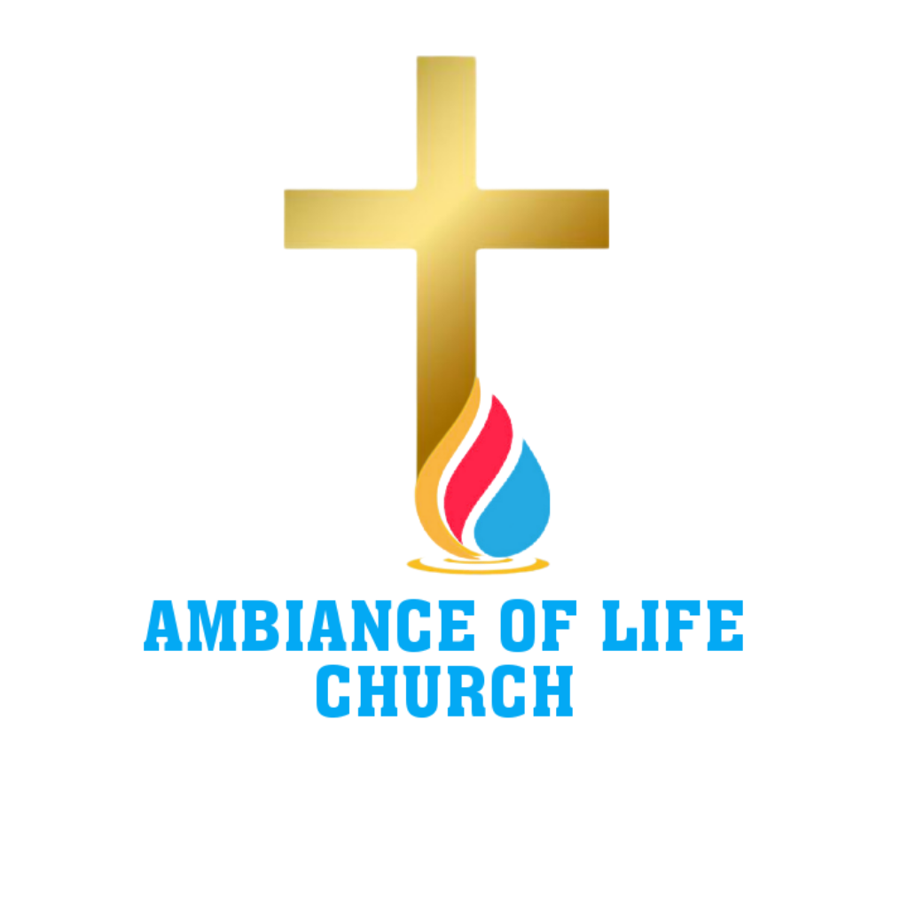

Revealing and expressing the limitless possibilities of the Zoe life — the God-kind of life.
Ambiance of Life Church (ALC) is a Christ-centered ministry founded through Pastor Reuben Lubumba, with a passion to reveal and express the limitless possibilities found within the Zoe life — the very life of God.
Vision: To enable believers to experience and express the possibilities within the Zoe life.
Mission: To cultivate a Spirit-filled environment where the Word of God and the Holy Spirit bring transformation.
Core Pursuit: Reaching the lost and discipling believers into spiritual maturity.
To raise a victorious end-time Church empowered to manifest heaven on earth.
To equip believers for spiritual and physical excellence in every sphere of life.
Addressing spiritual needs and revealing identity in Christ (John 10:10).
Demonstrating God's love by meeting tangible needs (James 2:14–17).
Training believers to grow and transform (Romans 12:2).
